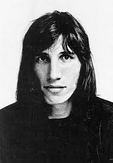
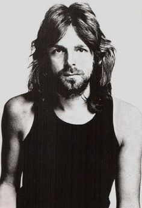

Pink Floyd
Members
-

Roger Waters
-

David Gilmour
-

Nick Mason
-

Richard Wright
History
Grupo británico de pop rock, integrado originalmente por Syd Barret (Cambridge, Reino Unido, 1946), Nick Mason (Birmingham, id., 1945), Roger Waters (Cambridge, Reino Unido, 1944) y Richard Wright (Londres, 1945). El grupo pasó por dos etapas bien definidas, la primera con Roger Waters y Syd Barret como líderes creativos (papel que asumió el guitarrista David Gilmour cuando aquél fue expulsado por sus problemas con las drogas), y la segunda tras la marcha de Roger Waters. Principales herederos y continuadores de una línea que se hallaba ya en el álbum Sgt. Pepper's Lonely Hearts Club Band (1967) de The Beatles, su estilo musical psicodélico y las espectaculares puestas en escena de sus conciertos les confirieron una personalidad propia dentro del mundo de la música popular, hasta el punto de ser considerados como los padres de un nuevo género que se denominó rock sinfónico; desde Queen, David Bowie o Yes hasta Guns N' Roses, Chris Martin y Faith No More, los grupos e intérpretes coetáneos y posteriores que recibieron su influencia serían innumerables. Su popularidad mundial se empezó a gestar con la publicación, en 1973, del disco Dark side of the moon. En 1980 publicaron el que se convirtió en el disco más reputado del grupo, The Wall, del que tres años más tarde se extraería el filme animado del mismo título, protagonizado por Bob Geldof. En 1983, y coincidiendo con el abandono de Waters, cuyo excesivo protagonismo había enrarecido la convivencia en el seno del grupo, éste se disolvió. Cuatro años más tarde, Mason, Wright y Gilmour se reunieron de nuevo, lo que originó un proceso judicial entablado por Waters sobre la propiedad del nombre original. Resuelto el caso a favor de David Gilmour y compañía, el grupo Pink Floyd regresó al mundo de la música con un disco que se convirtió en un éxito inmediato, A momentary lapse of reason (1987).